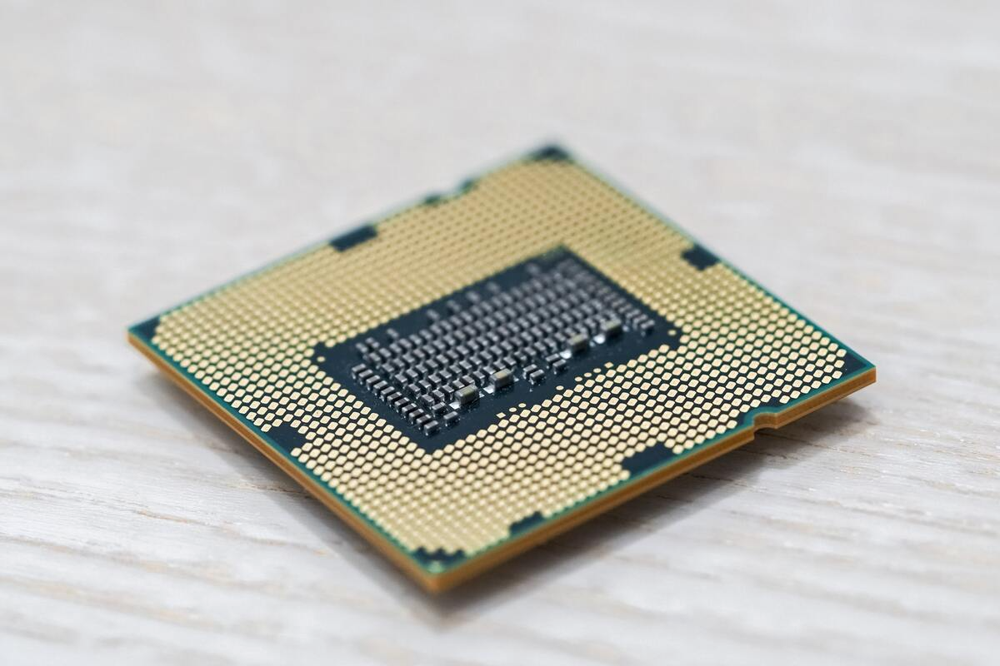
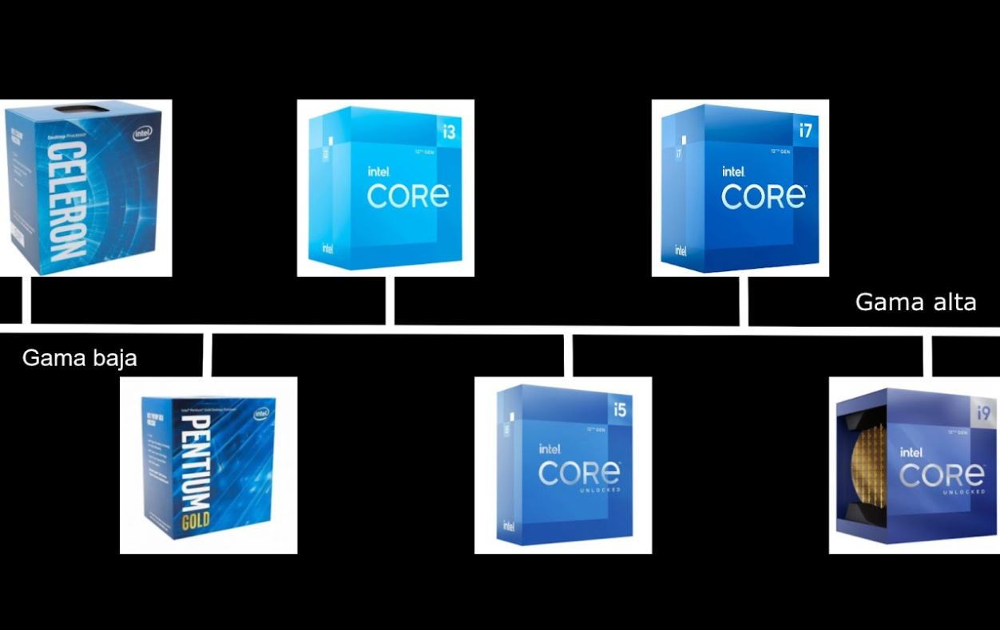
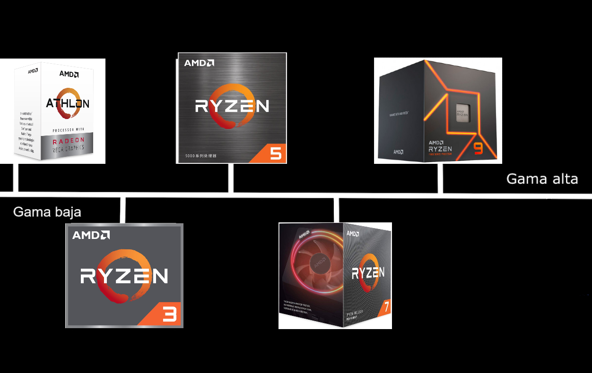

| CPU | |
|  |
Vale, empecemos por lo primero: la CPU. Comúnmente llamada simplemente procesador, es el encargado de ejecutar todos los programas, desde el sistema operativo hasta las aplicaciones de usuario. Solo ejecuta instrucciones en lenguaje binario, realizando operaciones aritméticas y lógicas simples, tales como sumar, restar, multiplicar, dividir, las lógicas binarias y accesos a memoria.
El procesador se coloca en un zócalo o socket, donde se le acopla un sistema de disipación propio, que puede ser por aire o algún líquido. Esto es obligatorio ya que el microprocesador se calienta mucho, sobrepasando sin esfuerzo los 150 grados centígrados sin ningún tipo de disipación, lo que fundiría el chip al momento. |
| ¿Cómo se fabrican? |
|
Un procesador está creado por principalmente por transistores de silicio, el cual se extrae de la arena. Para ello, se funde el material en cuestión a alta temperatura (1370 °C) y muy lentamente (10 a 40 mm por hora) y así se va formando el cristal. De este cristal, de cientos de kilos, se cortan los extremos y la superficie exterior, para obtener un cilindro perfecto. Luego, el cilindro se corta en obleas de 10 micras de espesor (la décima parte del espesor de un cabello humano) utilizando una sierra de diamante. De cada cilindro se obtienen miles de obleas, y de cada oblea se fabricarán varios cientos de microprocesadores. Estas obleas son pulidas hasta obtener una superficie perfectamente plana, pasan por un proceso llamado “annealing”, que consiste en someterlas a un calentamiento extremo para eliminar cualquier defecto o impureza. De aquí en adelante, comienza el proceso del «dibujado» de los transistores que conformarán a cada microprocesador. A pesar de ser muy complejo y preciso, básicamente consiste en la “impresión” de sucesivas máscaras sobre la oblea, sucediéndose la deposición y eliminación de capas finísimas de materiales conductores, aislantes y semiconductores. Para que os hagáis una idea de como de preciso es este proceso, un transistor construido en tecnología de 7 nanómetros (un tamaño que se usa actualmente) tiene un ancho equivalente a unos 34 electrones. Una vez que la oblea ha pasado por todo el proceso litográfico, tiene “grabados” en su superficie varios cientos de microprocesadores, cuya integridad es comprobada antes de cortarlos. Se trata de un proceso obviamente automatizado, y que termina con una oblea que tiene grabados algunas marcas en el lugar que se encuentra algún microprocesador defectuoso. |

| ¿Intel o AMD? |
|
Esto es algo que realmente hay que tener en cuenta, ya que depende del uso que quieras darle al procesador y el precio que estés dispuesto a pagar.
Actualmente lo último en procesadores son los Ryzen 7000 (AMD) y los Intel Core de 14a generación. AMD siempre ha sido conocida por ofrecer una relación calidad precio mayor en todas sus gamas en comparación con Intel Intel teniendo un rendimiento igual o incluso superior incluso usando la interfaz PGA (los pines que permiten el contacto entre la placa base y la CPU están en el procesador), una más cara de producir que la LGA usada por Intel (los pines están en la placa), aunque en los Ryzen 7000 esto ya no es así, ya que es la primera vez que AMD abandona el PGA y se pasa al LGA. Para que veas todas las diferencias con respecto a estas dos grandes marcas te dejo aquí abajo toda la información. |
| · Intel | |
|
Si quieres investigar sobre la empresa y su trasfondo aquí te dejo un enlace a la hermosa Wikipedia, por que aquí voy a hablarte de lo que interesa, por lo que has entrado. Intel tiene una gama de procesadores muy extensa de la que te voy a hablar (en todos los puntos de más abajo me voy a referir a los procesadores de 12a generación). Es muy importante saber que en su duodécima generación se implementa una arquitectura híbrida en la que hay dos tipos diferentes de núcleos, P-cores (núcleos de rendimiento) y E-cores (núcleos de eficiencia). Los P-cores vienen a ser los que hemos tenido ahora, pero los eficientes son núcleos que se encargan de tareas menos importantes para liberar carga a los núcleos principales. Vale, ahora al tema, como puedes ver en este gráfico de la derecha hecho un poco rápido, hay cinco tipos de procesadores de Intel, que se pueden resumir en gama baja (celeron, pentium e i3), gama media (i5 e i7) y gama alta (i9). |
 |
|
- A la izquierda tenemos los Celeron y los Pentium (en la foto aparece un Gold, ahora explico). Estos dos son los de gama de entrada para uso ligero (en especial el Celeron, al menos con los Pentium te apañas para jugar si lo acompañas con una gráfica decente), con dos núcleos y dos hilos en los Celeron y dos núcleos y cuatro hilos en los Pentium. Dentro de los Pentium están los Silver y los Gold, aunque no hay mucha diferencia entre ellos es más fácil encontrar los Gold, y en mi opinión creo que no merece la pena comprar un Silver frente a estos. - Dentro de la línea de los Intel Core, los i3 son los procesadores de gama baja, con cuatro núcleos y ocho hilos. Estos tienen un precio bajo y un rendimiento aceptable. Acompañado de una gráfica de gama baja-media como una GTX 1050 hace un combo muy bueno, además de que no hará cuello de botella. - Ahora es el turno de la gama media, los i5. Seis núcleos y doce hilos con los que tendremos un rendimiento excelente a un precio razonable. En su versión de duodécima generación tiene cuatro núcleos eficientes extra que ayudan bastante a la hora de jugar. Con este procesador no debes preocuparte del cuello de botella a la gráfica, ya que incluso con una 3060 no tendrás ningún problema. - En la gama media-alta tenemos a los procesadores i7, con una potencia bruta sorprendente y un rendimiento sobresaliente, aunque aquí el precio empieza a subir. Estos procesadores son muy buenos para jugar hasta en 4K, incluso los de la décima y undécima, siempre y cuando utilizes una tarjeta gráfica de alta gama. - Ahora los más potentes de todos. Los i9, procesadores de tope de gama que ofrecen una experiencia premium por un precio alto, pero acorde con su rendimiento. Tanto en su versión de undécima generación como de duodécima tiene ocho núcleos de rendimiento con sus dieciseis hilos (el 12a generación tiene 8 núcleos eficientes extra), sin embargo en la décima generación tiene 10 núcleos y 20 hilos. |
| · AMD | |
|
Es una empresa multinacional de tecnología con sede en Santa Clara, California. Se fundó en 1969 y desde entonces ha crecido para convertirse en uno de los principales fabricantes de procesadores y tarjetas gráficas del mundo. Su enfoque principal está en el diseño y la producción de unidades de procesamiento acelerado (APU) y unidades de procesamiento central (CPU), así como en tarjetas gráficas. AMD ha sido conocida por ofrecer alternativas competitivas a los productos de Intel en el mercado de procesadores y a los productos de NVIDIA en el mercado de tarjetas gráficas. Algunos de sus productos más destacados incluyen las líneas de procesadores Ryzen y Threadripper, así como las tarjetas gráficas Radeon. Al igual que con Intel tenéis una imagen representando todas las gamas procesadores de consumidor que tiene disponibles. |
 |
|
- A la izquierda tenemos la familia Athlon, de gama de entrada para uso ligero, con dos núcleos y cuatro hilos normalmente. Dentro de los Athlon están los Silver y los Gold (al igual que con los Pentium). Los procesadores Athlon actuales se basan en la arquitectura Zen con gráficos integrados Radeon Vega. Aunque se siguen vendiendo a día de hoy, es muy raro verlos y no tienen ningún sitio en el mercado, habiendo muchas alternativas por el mimso coste. - Los procesadores Ryzen 3 actuales se basan en la arquitectura Zen con cuatro núcleos y ocho hilos y están diseñadas para ofrecer un rendimiento sólido en tareas cotidianas como navegación web, correo electrónico, edición de documentos y reproducción de contenido multimedia - Los Ryzen 5 vienen a competir con los Intel Core i5. La mayoría de los procesadores Ryzen 5 tienen seis núcleos y doce hilos, lo que los hace ideales para jugar e incluso tareas de productividad más pesadas. - La mayoría de los procesadores Ryzen 7 tienen ocho núcleos y dieciséis hilos, con los que podremos realizar multitarea o virtualización de forma más rápida, además de una mayor potencia en juegos y demás. - Los procesadores Ryzen 9 de AMD son potentes unidades de procesamiento que han capturado la atención de entusiastas y profesionales gracias a su rendimiento excepcional. Los Ryzen 9 están diseñados para ofrecer un rendimiento de gama alta en tareas intensivas, como la edición de video, el diseño gráfico y la transmisión en vivo. Con núcleos de procesamiento que van desde 12 hasta 16, son opciones atractivas para aquellos que buscan un rendimiento excepcional en aplicaciones intensivas y desean aprovechar las últimas innovaciones tecnológicas en el mundo de los procesadores de escritorio. |